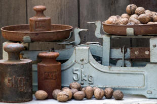
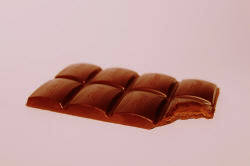
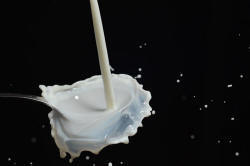
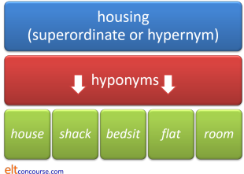

Countability and uncountability

If you have followed the guide to word class (new tab), you'll know that nouns can be countable (table, dog etc.) or uncountable (water, love, sugar, anger etc.). You'll also know that some can be both (the seven seas, the sea is rough, sugar is bad for you, two sugars, love is admirable, the loves of her life).
Here we look a bit harder at this very important distinction.
In the picture above, therefore, we can talk about an uncountable noun (weight)
and a countable one (kilo[s]). Note, too, that we can
have weights but in a different meaning.
This is not only a very important distinction, it is one that not all
languages share and which causes really serious problems for learners at
all levels.
In English, it is almost impossible to use a noun correctly unless one
first decides whether the noun is to be used as a count noun or as a
mass noun.
|  |
 |
Mass and Count nouns |
| some chocolate | some chocolates |
The usual distinction made in classrooms is between countability and uncountability and that's probably enough for most learners. However, we teachers need to know a bit more about the area so a better categorisation is between mass nouns and count nouns. Often, the term uncountable noun is wrongly used for count nouns which are only plural but obviously countable. We can say three people or six cattle and this means that the nouns are count nouns but plurals (albeit slightly odd plurals). Both people and cattle are count nouns but they only occur in the plural.
While the terms countable and uncountable nouns are helpful for some purposes, they are misleading.
For example, money is a
mass noun we can count. We cannot say
*How many money?
but have to choose
How much money?
Almost all mass nouns can be made count
nouns by the use of another noun so we can have
some cake → a slice of cake
some cheese → a bit of
cheese
lots of a information → two pieces of information
too much sugar → three kilos of sugar
etc. What we do here is add a measure (pint,
yard, kilo etc.) or a partitive (bit, piece,
lump, slice, rasher, pane, chunk etc.)
By the same token, it is arguably advisable to tell our learners
about count and mass uses rather than count and
mass nouns because that's nearer the truth of the matter. For
example, we can have:
How much cheese is in the fridge?
and
How many cheeses are in the fridge?
The rough sea is coming over the harbour.
and
The rough seas are coming over the harbour.
The distinctions between count and mass nouns |
There are two simple enough differences. Here they are:
- Count nouns form plurals, mass nouns do not. We allow,
therefore:
table-tables
desk-desks
house-houses
etc. but do not allow:
petrol-*petrols
information-*informations
help-*helps - Mass nouns can occur without a determiner or plural form as
the subject and object of verbs. We can have:
I got advice
Money helped
I have furniture
Information was provided
Rain fell
but not
*I got suggestion
*Window broke
*She has pen
*Chair was comfortable
although making the count nouns plural or adding a determiner such as an article allows:
I got suggestions
She has her pen
I have the chair
The drops fell
 |
Count nouns |
This is the simplest category but it's not always obvious from the form whether a noun is a count noun or not. The usual defining characteristic of a count noun is its ability to form a plural (usually with -s) when it demands a plural verb form. Secondarily, is the fact that one can use the indefinite article (a[n]) before it. There are some important exceptions and irregular forms to consider.
Count nouns which only appear in the plural
- cattle, people, police, vermin etc.
But there are corresponding nouns which can be used in the ordinary, count way: cow, person, police officer, rat. - objects containing two equal parts, e.g.:
trousers, tongs, scissors, glasses etc.
are either never found in the singular or have a different meaning in that form. For example:
A: Where's my glass?
B: It's in front of you. Put your glasses on! - Some count nouns have no singular form. For example:
annals, arrears, earnings, outskirts, valuables, savings etc.
You can put a determiner such as few, many etc. before these but not a number (many valuables, *six valuables) - Count nouns may have a plural-only form but a singular or mass
form which has a different meaning. For example:
arms (weaponry, countable only plural) vs. arm (limb, countable)
grounds (reason, countable only plural) vs. ground (surface of the earth, mass noun)
damages (money awarded for by a court, countable only plural) vs. damage (harm, mass noun)
Irregular plurals
There are quite a number of common irregular plurals (mostly the result of retaining older forms) and some other oddities to know about:
- old plural forms: louse / lice, mouse / mice, ox / oxen, man / men, foot / feet, tooth / teeth etc. These are well known and can be taught as they occur. There's no rule.
- zero plurals: sheep, deer, grouse, dozen (when it's
exact, dozens when it means lots). The names
of many different animals (especially fish) work this way. We
can have:
five dozen people came vs. dozens arrived
one sheep vs. sixteen sheep
some fish for tea vs. three fish in the pond [but fishes is also possible in this sense] - the f vs. v problem: plurals such as
roofs, dwarfs, handkerchiefs
are common but the regular form (and increasingly the regular pronunciation) is to change the f to a v in the plural and add -es:
wolves, halves, ?rooves - the -os vs. -oes problem: the regular plural of nouns ending in -o is to add -s (radios, kilos etc.) but there are a number which add -es (potato, tomato) and some which can do both (mosquito).
- foreign plurals: sometimes English retains the
plural form of the language from which the noun has come:
phenomenon / phenomena, antenna / antennae, larva / larvae, crisis / crises
sometimes we can choose either the foreign or English plural (syllabuses or syllabi) and sometimes the word is pluralised in one use (index / indices in scientific writing but indexes in non-scientific use) - plurals made singular: graffiti, data and media are all plurals often treated as singular in English. The use of criteria instead of criterion as a singular is just wrong.
Nouns modifying other nouns
Many count nouns can work to modify other nouns, by a process called
compounding or by classifying the noun in some way, e.g.:
a book
sale, a pencil case, a saloon car, a windmill
In this use the singular is used for the first noun unless there's
a possibility of ambiguity. So we get
a book shop, a two-hour shift, a four-year-old child, boy scouts,
child actor etc.
but not:
*three bookshops, *a four-years-old child etc.
There are some exceptions: men friends, women doctors and some
avoiding ambiguity such as arms race.
Notice here, too, that some nouns which are nearly always plural only
appear in the singular when modifying other nouns:
spectacle case,
binocular case, trouser pocket.
 |
Unmarked uses of count nouns |
| on foot |
There are times when the amount of a count noun really doesn't matter – it's the concept we want to express so we treat the nouns as mass nouns and leave out the article. We get, therefore, example such as:
go to / be in bed, church,
school, hospital etc.
travel by / go by car, bicycle,
plane, rail ferry etc.
at / before / after / by / in
dawn, sunset, sunrise, autumn, day, night etc.
Many reference books treat these kinds of thing as idioms to be learned separately but it is conceptually easier to see them as unmarked forms (Chalker 1987: 29).
There are a number of other expressions in which the noun is not marked for plural or singular forms. Here's a list (also based on Chalker, op cit.):
- Other prepositional phrases:
by chance, on call, by hand, in mind, at heart
etc. - Parallel structures:
arm in arm, eye to eye, year after year
etc. - Double structures:
hand over fist, life after death, hand on heart
etc.
|  |
Mass nouns |
It's easy enough to spot normal mass nouns because
- you can't put the indefinite article in front of them (*a milk, *a money, *a bread etc.)
- they normally have no plural form (*milks, *furnitures, *informations etc.)
So we get the common list of mass nouns:
advice, anger, assistance, bread, chaos, courage, dirt, education, information, leisure, luck, machinery, milk, news, permission, poetry, rubbish, shopping, transport, weather etc.
These are mass nouns in English but not in many languages.
Many abstract nouns in English are mass nouns so we can include
in the list, e.g.:
advice, anger, happiness, information, knowledge, news
etc.
but that is not an entirely reliable rule because:
belief, joy, pleasure, prejudice, suggestion, theory
and virtue
can all be used as count nouns.
But:
Nouns with both mass and count uses
- These sometimes have subtle distinctions but the meaning is
close. Examples are:
Unemployment is affecting business vs. Businesses are closing
Noise is a problem here vs. The noises can be disturbing
Chocolate is addictive vs. These chocolates are delicious - Sometimes the distinctions are much greater in meaning.
For example:
Dress is formal vs. She's wearing a formal dress
It's made of iron vs. Most people have electric irons
The works of Shakespeare vs. Finding work is difficult
(Sex is another of these nouns, by the way.) - Occasionally, English users like to omit what are often called
unit nouns. Unit nouns (better known as partitives) are the items we use to express a
quantity of a mass noun. So we have, e.g.:
a blade of grass
a pint of beer
a bit of cotton
a piece of furniture
a teaspoon of sugar
a cup of coffee
etc.
Sometimes, the unit noun is omitted to allow two sugars, three beers, a few coffees etc. This is not particularly common and can't occur with most mass nouns. It's also informal. - Almost all mass nouns can be used as count nouns when we are classifying: Spanish wines, Greek cheeses, spicy foods etc. but some remain resiliently mass nouns (furniture, information, music, for example).
 |
Choice of quantifier and other determiner |
In English, but not in all languages, whether a noun is mass or count controls how it is determined. Quantifiers are, for obvious reasons, the most affected. For example:
- many vs. much
- many is used for count nouns:
She has many problems
There were many people who disagreed
How many knives are there?
much is used with mass nouns
I don't have much work on
There was much disagreement
How much cutlery is there? - (a) few vs. (a) little
- Except colloquially, few is used for count nouns:
There were few people who disagreed
A few children arrived late
There are fewer things to do now
The winner is the one with the fewest points
(a) little is used for mass nouns:
I need a little help here
Less noise please!
The least wine makes be giddy - a, each and every
- These only work with count nouns so we allow:
a man
each child
every possibility
but not
*a furniture
*each grass
*every anger - articles
- The rules are:
- A count noun in the plural can appear with the zero
article:
Parrots are interesting birds - A count noun in the singular cannot appear with the zero
article:
*Parrot is interesting bird - A mass noun can stand with the zero article:
Food for parrots must be carefully selected - A mass noun cannot appear with the indefinite article:
*A food for parrots must be chosen carefully
An apple would be a good addition to this
we are using the noun apple in its usual count-noun guise, but if we say:
Apple would be a good addition to this
we clearly intend that apple is understood as a mass noun. - A count noun in the plural can appear with the zero
article:
Some common quantifiers and determiners are unaffected and
insensitive to the distinction, including a lot of, any, the,
some and more.
There is a list of quantifiers which notes which are restricted and
which not on this site, linked in the list of related guides at the
end.
 |
Equivalent synonyms |
English is slightly unusual in have a range of pairs of nouns
which mean more or less the same thing but one is count and the
other mass.
Here's a short list:
| Mass nouns | Count nouns |
| advice carpeting change fauna flora flu foliage footwear fruit gear, equipment knowledge laughter luggage pasta software wildlife |
suggestion carpet coin animal plant cold leaf shoe, sandal etc. vegetable tool belief laugh suitcase letter noodle app, program animal |
Often, what is called a superordinate is a mass noun and the hyponyms which lie below it (and are included in the superordinate) are count nouns. So for example, we get:

| Related guides | |
| partitives and classifiers | for a more advanced guide how mass nouns may be made countable |
| quantifiers | for a PDF formatted list of common quantifiers and their use with mass or count nouns |
| mass nouns | for a list of the most common and troublesome mass nouns in English |
| word class | for an overview |
| nouns | for a more advanced guide to nouns in general which includes discussion of the mass-count distinction in more detail |
References:
Chalker, S, 1987, Current English Grammar, London:
Macmillan